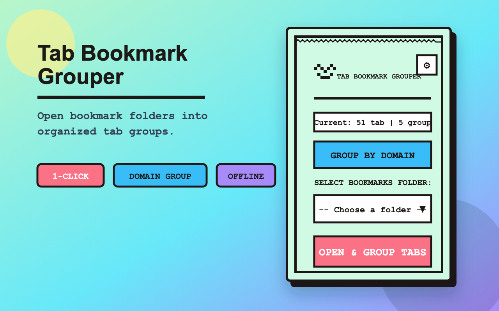
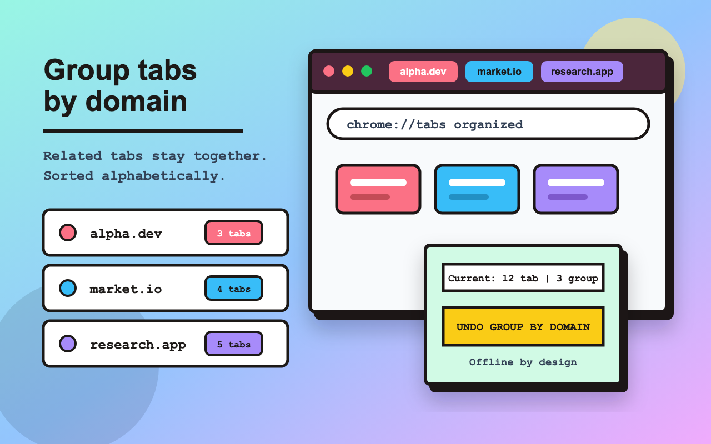

Open and group bookmark folders
Select one Chrome bookmark folder and open its links as a named, color-coded tab group.
Chrome Extension · MV3 · Local-first
Tab Bookmark Grouper turns a bookmark folder into a clean Chrome tab group, groups messy open tabs by domain, and exports supported sessions to local files.

Built for tab-heavy work
Select one Chrome bookmark folder and open its links as a named, color-coded tab group.
Collect related tabs from the same root domain, merge with existing matching groups, and sort groups alphabetically.
Try grouping without fear. The button switches to undo mode after grouping so you can reverse the latest grouping pass.
Save supported windows, tabs, and tab groups to a local BTG file and restore them later with validation.
Domain grouping
Domain grouping keeps related tabs together, sorts tab groups alphabetically, and leaves standalone tabs at the end so the browser tab strip is easier to scan.

Privacy model
Bookmark, tab, and session data are processed on your device.
The extension package does not include tracking SDKs or telemetry code.
Session exports are created only when you choose to download a BTG file.
Install
Install Tab Bookmark Grouper from the Chrome Web Store, or review the source on GitHub.